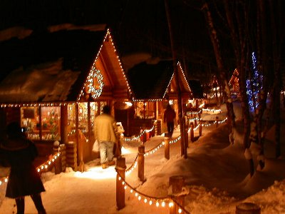
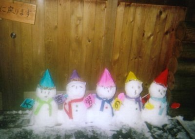
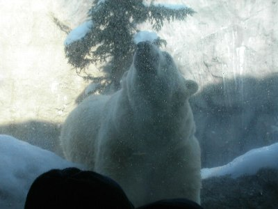

冬の富良野 | 2006年１月 |
|---|---|
| 冬に富良野に赴きました 目的はやっぱりSKI です。ここのゲレンデは２つのセクションに別れており、それぞれのセクションの麓には２つのプリンスホテルがあるという豪華な場所です。またナイターをして気がついたのですが、富良野の町が夜景となり、とてもきれいでした。ゲレンデの広さもなかなかなものですが、ただ２つのセクションをつなぐリフトの終了時刻が早すぎる（１５：００頃）であったことがとても不満でした。非圧雪ゾーンが各所にあり、とても楽しめます。 | |
 |  富良野スキー場 |
| またプリンスホテルでは夜にチャペルコンサートが行われていました。２時間で2000円程度。フォーク系のミュージシャンが奏でます。席は100席もありません。「翼をください」の合唱がよかったです。ホテル周辺には「BAR」「ニンクルテラス（ひとつのみやげものや街）」「コーヒー喫茶」などがありました。 BARは一軒やです。とても落ち着く場所ですが、STAFFの要領とオーダーの値段の高さが不満でした。ニンクルテラスはとても楽しめます。 基本は「手作りのみやげもの」。ペーパークラフトやオルゴール、落ち葉や不用材を用いて人形を作った製品などを扱ってました。雪の結晶のシルバーはペンダントやブレスレッドなどあり、とても興味をもちました（銀99.999％だとか）。ふくろうの家もふくろう由来のアイテムが揃っており楽しめました。 | |
|  ニングルテラス |  |
| スノーモービル体験もしました！富良野にアクティビティ会社が沢山あるとは驚きました。排気量からコースの距離、時間まで選定の基準はさまざまでした。 ホテル宿泊者でないのですがロービーにお願いしてつないでもらい、体験予約をさせていただきました。250CCの１０ｋｍ（川べり）を選定。30ｋｍの選定もあったが、山奥、飽きるとの話で今回はやめました。 で、モービルに乗った感想は「直進性がよい」「後輪がスタックしやすい」「スクーター感覚」です。機会があったらまた乗りたい。 | |
 スノーモービルで快走する |  話題のペンギンの行進 |
| 最後は旭山動物園。 ここの見ものはペンギンの行進です。 悔しいけどTV 局がとてもよいポジションで撮影してました。 寒い中、サバンナ出身の動物様お疲れ様です（笑）。トラは写真慣れしてました（笑）。カメラを向けると顔を向ける（笑）。 | |
 演技派の虎 |  百獣の王も寒さには弱い |
| ライオンはとても寒そう。木板の上で寒さに耐えているようでした。 反面、北極熊はとても好調で吠えてました（笑）。 ペンギンの水中での泳ぎを間近に見ることができるのも、本動物園の特徴。とても軽やかで早かった。 | |
|  吼えるホッキョクグマ |  軽やかなペンギンの泳ぎ |
| 写真＆コメント ｂｙ シュガー | |